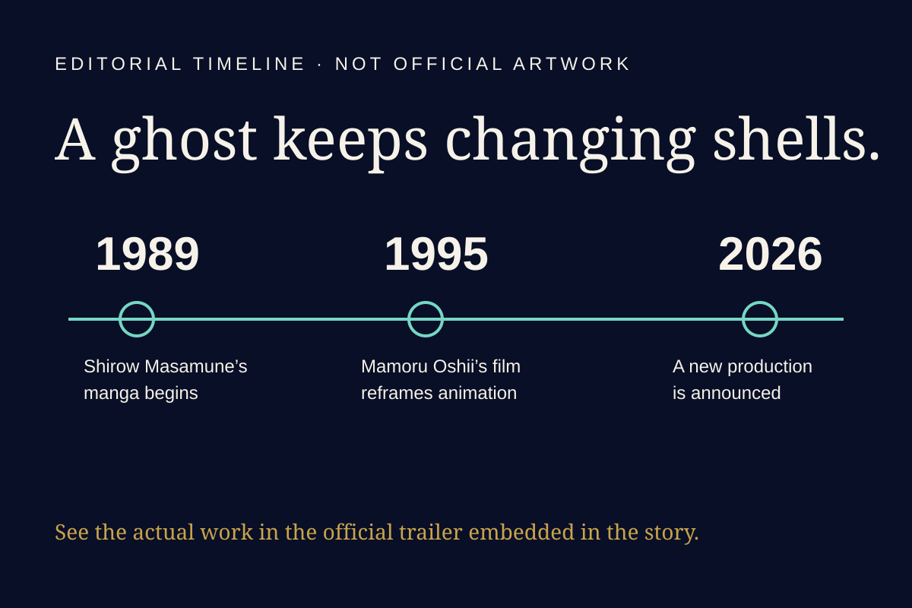

YUJI @ Japan
YUJI @ Japan
Culture · Anime · New production
A ghost keeps changing shells.
Science SARU has started another Ghost in the Shell production. The 1989 manga survived by allowing each adaptation to rebuild its visual body.
Read the full story →Original editorial timeline, not official character art. The story includes the actual official 1995 film trailer.